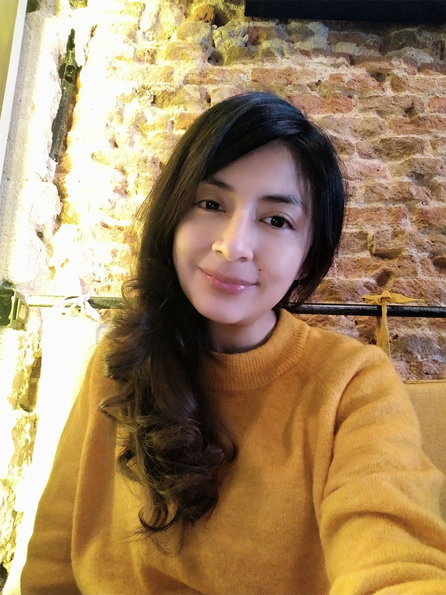

Sobre Mí
Hola, soy Ana Tintin, una ilustradora tradicional especializada en técnicas analógicas, especialmente acuarela y acrílicos. Mi trabajo combina elementos realistas con fantasía, con un enfoque en ilustración infantil y narrativa visual.
Creo que cada ilustración cuenta una historia. Mi proceso comienza con la investigación y exploración, seguido de bocetos, hasta lograr la pieza final.